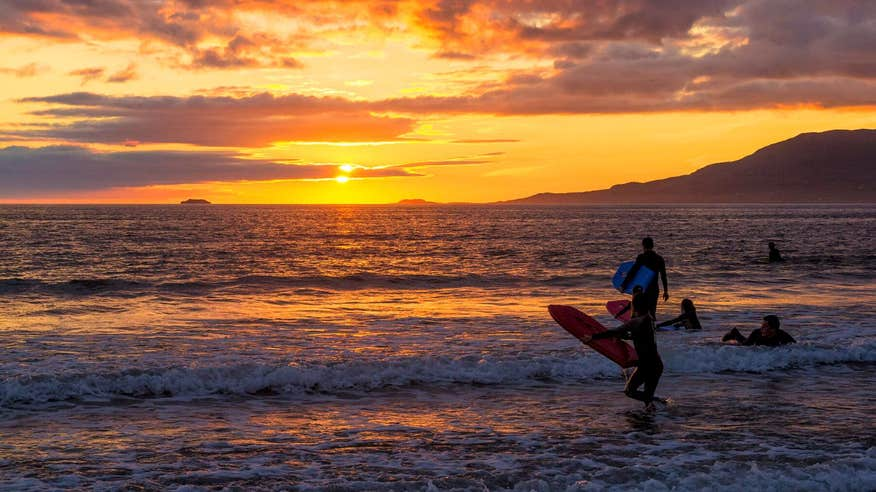
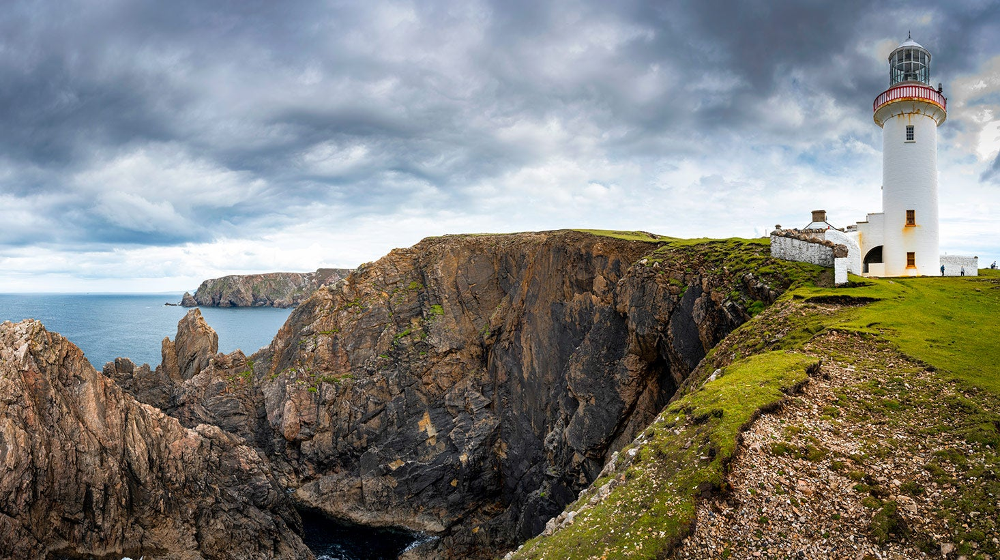
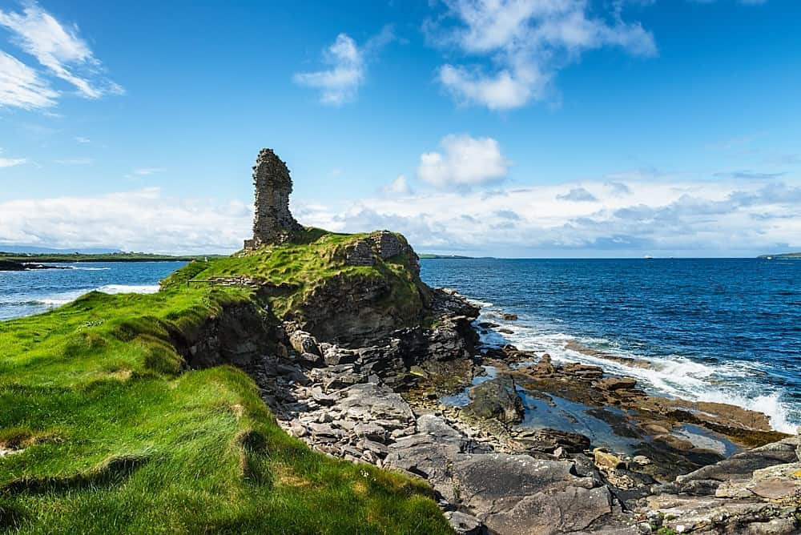

Interesting Things To Do
Surfing at Bundoran

Bundoran is a small town near the border of County Sligo, it's a very popular holiday destination for people wishing to have a "staycation".
However Bundoran is very famous for it's beaches and surfing facilities, people travel all over Ireland and some even travel abroad to visit it's crashing waves.
If you would like to learn more about surfing in Bundoran follow this link.
Arranmore Island

Arranmore is a rural island just off the coast of west Donegal. It is only accessible by a ferry that leaves Burtonport, near Dungloe.
It has a very small tight-knitted community which loves visitors alike who come to see the rugged coastlines and natural beauty.
The island currently has a population of 478 residents and it is also a Gaeltacht area.
Here is a link to information about the ferry.
Saint John's Point

Near the coast of the famous Killybegs in south west Donegal is the iconic Saint John's Point, a lonely lighthouse standing on the point of a coast and facing out to the Atlantic Ocean.
It's an isolated place and is very much out of the way but it is a beautiful location and a visit is highly recommended.